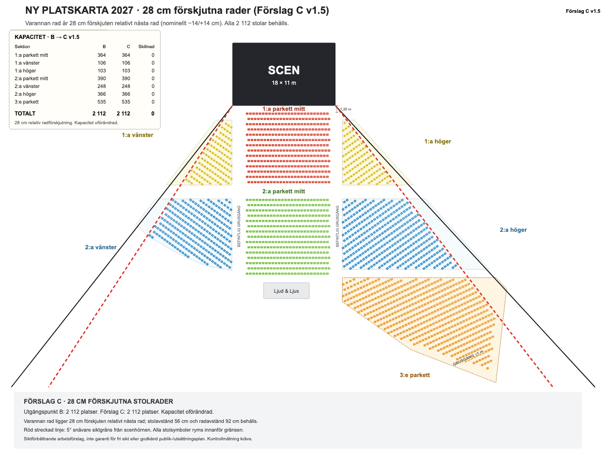

Originalplan
Ursprunglig stolsplan med yttergränsen förankrad i scenens framhörn.
- Kapacitet
- 2 353
- Version
- v1.4
Interaktiv arbetsmodell · Naturscen 2027
Jämför originalplanen, den snävare siktgränsen och förslag C med 28 cm förskjutna rader. Välj exakt parkett, sektion, rad och stol direkt i 3D.
3D-modellen fungerar bäst på en dator med modern webbläsare.

PDF-filerna öppnas direkt i webbläsaren och kan laddas ner eller delas vidare. Förslag C innehåller även den dokumenterade siktanalysen.
Ursprunglig stolsplan med yttergränsen förankrad i scenens framhörn.
Stolar utanför den snävare, hörnförankrade siktgränsen har tagits bort.
Samma 2 112 plats-ID som B, med förskjutna rader och siktanalys på PDF-sida 3.
Modellresultat
Förskjutningen förbättrar framför allt sikten mot scenmitt. 159 fler modellerade platser klarar scenmittsprovet jämfört med B. Förbättringen gäller inte varje plats och är ingen garanti vid andra personhöjder eller vertikala förutsättningar.
All data ligger i en fristående modell. Ingen installation eller inloggning krävs.
Växla mellan A, B och C utan att tappa kameraläget.
Skriv parkett, sektion, rad och stol eller klicka direkt i modellen.
Gå till sittvyn och jämför scenmitt, nio scenmål och personer framför.